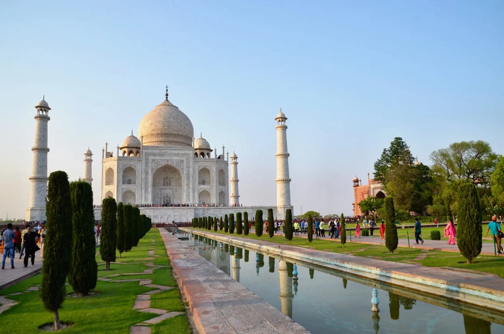
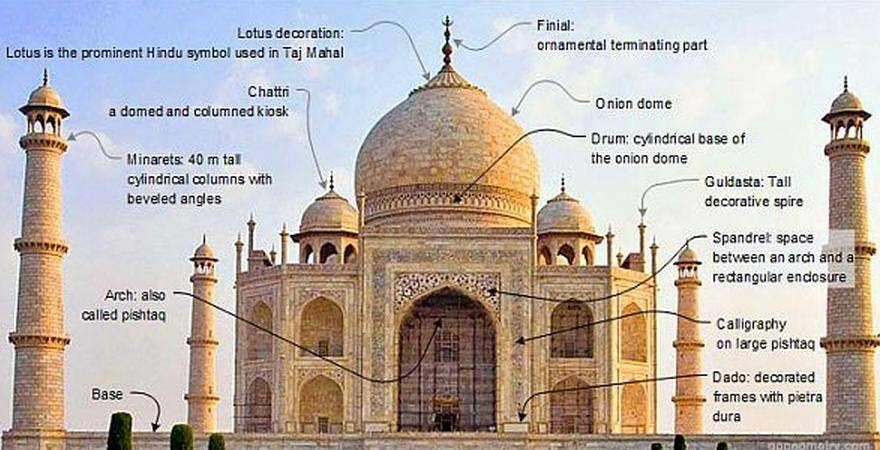
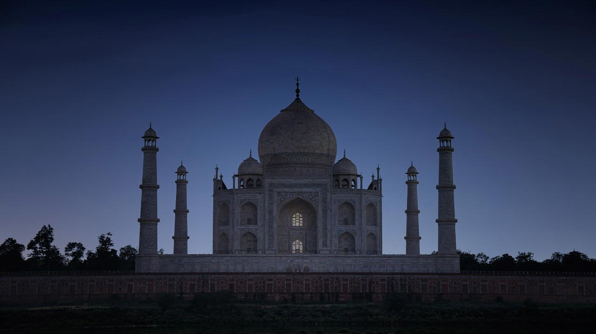

Taj Mahal

The Taj Mahal 'Crown of the Palace', is an Islamic ivory-white marble mausoleum on the right bank of the river Yamuna in the Indian city of Agra. It was commissioned in 1632 by the Mughal emperor Shah Jahan (r. 1628–1658) to house the tomb of his favourite wife, Mumtaz Mahal; it also houses the tomb of Shah Jahan himself. The tomb is the centrepiece of a 17-hectare (42-acre) complex, which includes a mosque and a guest house, and is set in formal gardens bounded on three sides by a crenellated wall.
Construction of the mausoleum was essentially completed in 1643, but work continued on other phases of the project for another 10 years. The Taj Mahal complex is believed to have been completed in its entirety in 1653 at a cost estimated at the time to be around ₹32 million, which in 2020 would be approximately ₹70 billion (about US $1 billion). The construction project employed some 20,000 artisans under the guidance of a board of architects led by the court architect to the emperor, Ustad Ahmad Lahauri. Various types of symbolism have been employed in the Taj to reflect natural beauty and divinity.
★Inspiration
The Taj Mahal was commissioned by Shah Jahan in 1631, to be built in the memory of his wife Mumtaz Mahal, who died on 17 June that year, while giving birth to their 14th child, Gauhara Begum.Construction started in 1632, and the mausoleum was completed in 1648, while the surrounding buildings and garden were finished five years later.The imperial court documenting Shah Jahan's grief after the death of Mumtaz Mahal illustrates the love story held as the inspiration for the Taj Mahal.
★Architecture and design

The Taj Mahal incorporates and expands on design traditions of Indo-Islamic and earlier Mughal. Specific inspiration came from successful Timurid and Mughal buildings including the Gur-e Amir (the tomb of Timur, progenitor of the Mughal dynasty, in Samarkand),Humayun's Tomb which inspired the Charbagh gardens and hasht-behesht (architecture) plan of the site, Itmad-Ud-Daulah's Tomb (sometimes called the Baby Taj), and Shah Jahan's own Jama Masjid in Delhi. While earlier Mughal buildings were primarily constructed of red sandstone, Shah Jahan promoted the use of white marble inlaid with semi-precious stones. Buildings under his patronage reached new levels of refinement.
★Tomb
The tomb is the central focus of the entire complex of the Taj Mahal. It is a large, white marble structure standing on a square plinth and consists of a symmetrical building with an iwan (an arch-shaped doorway) topped by a large dome and finial. Like most Mughal tombs, the basic elements are Indo-Islamic in origin.
The base structure is a large multi-chambered cube with chamfered corners forming an unequal eight-sided structure that is approximately 55 metres (180 ft) on each of the four long sides. Each side of the iwan is framed with a huge pishtaq or vaulted archway with two similarly shaped arched balconies stacked on either side. This motif of stacked pishtaqs is replicated on the chamfered corner areas, making the design completely symmetrical on all sides of the building. Four minarets frame the tomb, one at each corner of the plinth facing the chamfered corners. The main chamber houses the false sarcophagi of Mumtaz Mahal and Shah Jahan; the actual graves are at a lower level.
Taj Mahal and outlying buildings as seen from across the Yamuna River (northern view)
Construction
The Taj Mahal is built on a parcel of land to the south of the walled city of Agra. Shah Jahan presented Maharajah Jai Singh with a large palace in the centre of Agra in exchange for the land An area of roughly 1.2 hectares (3 acres) was excavated, filled with dirt to reduce seepage, and levelled at 50 metres (160 ft) above riverbank. In the tomb area, wells were dug and filled with stone and rubble to form the footings of the tomb. Instead of lashed bamboo, workmen constructed a colossal brick scaffold that mirrored the tomb. The scaffold was so enormous that foremen estimated it would take years to dismantle.
The Taj Mahal was constructed using materials from all over India and Asia. It is believed over 1,000 elephants were used to transport building materials. It took the efforts of 22,000 labourers, painters, embroidery artists and stonecutters to shape the Taj Mahal The translucent white marble was brought from Makrana, Rajasthan, the jasper from Punjab, jade and crystal from China. The turquoise was from Tibet and the Lapis lazuli from Afghanistan, while the sapphire came from Sri Lanka and the carnelian from Arabia. In all, twenty-eight types of precious and semi-precious stones were inlaid into the white marble.

★Symbolism
Due to the global attention that it has received and the millions of visitors it attracts, the Taj Mahal has become a prominent image that is associated with India, and in this way has become a symbol of India itself.
Along with being a renowned symbol of love, the Taj Mahal is also a symbol of Shah Jahan’s wealth and power, and the fact that the empire had prospered under his rule Bilateral symmetry dominated by a central axis has been used by rulers as a symbol of a ruling force that brings balance and harmony, and Shah Jahan applied that concept in the making of the Taj Mahal. Additionally, the plan is aligned in the cardinal north-south direction and the corners have been placed so that when seen from the center of the plan, the sun can be seen rising and setting on the north and south corners on the summer and winter solstices respectively. This makes the Taj a symbolic horizon.